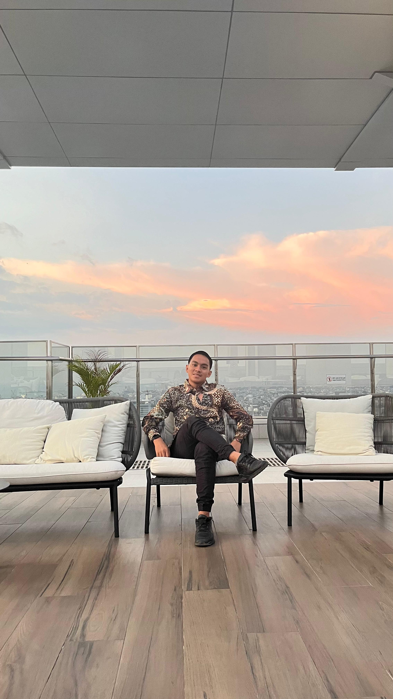

Selamat Datang di Portfolio Saya
Halaman inilah yang akan saya gunakan untuk mengumpulkan semua tugas pemrograman dari mapel Informatika
Beginner | Student
Tentang Saya
Perkenalkan saya adalah Muh. Farid Haq Al B. seorang siswa biasa dari SMA Negeri 5 Makassar yang memiliki impian jadi orang sukses dan masuk surga.
Prinsip Hidup
-
BerdoaMemulai segala sesuatu dengan doa dan tawakal
-
BerusahaPantang menyerah dalam menggapai cita-cita
-
BelajarTerus menimba ilmu sepanjang hayat
-
BeristirahatMenjaga keseimbangan dengan istirahat yang cukup
Program
Data Diri & Tipe Data
Program pengenalan berbagai tipe data dalam pemrograman melalui contoh data diri
C++
Basic
Lihat Program
Kasir Toko Sembako
Program kasir sederhana untuk menghitung total belanja dengan fitur diskon
C++
Basic
Lihat Program